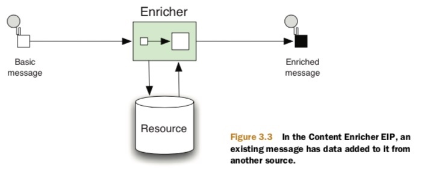

在EIP中，每个系统基本上都有着自己的协议或者数据类型，但是如何处理系统之间的协议转换在EIP中是一个非常重要的特性，在camel中同样也是。
Camel中的数据转换
在camel中数据转换是一个 比较广义的话题，一共包含两种模式
- Data format transformation,这种模式主要是将message从一个格式转换为另外一个格式例如 csv转xml
- Data type transformation,这种模式主要是讲message从一个类型转换为另一种类型，例如将java.lang.String转换为javax.jms.TextMessage

Camel中提供了六种基础的数据转换器

不过在camel中提供了API可以允许用户进行自定义数据类型转换（java code）
使用数据转换EIP
数据转换器主要是提供将消息从一个类型转换为另一种类型。

Camel提供了三种方式：
Processor方式
Processor方式主要是实现接口org.apache.camel.Processor同时它提供给你访问CamelContext的权限
demo
目前有需要将一个HTTP接口返回的数据转换为CSV形式进行输出
import org.apache.camel.Exchange;
import org.apache.camel.Processor;
public class OrderToCsvProcessor implements Processor {
public void process(Exchange exchange) throws Exception {
String custom = exchange.getIn()
.getBody(String.class);
String id = custom.substring(0, 9);
String customerId = custom.substring(10, 19);
String date = custom.substring(20, 29);
String items = custom.substring(30);
String[] itemIds = items.split("@");
StringBuilder csv = new StringBuilder();
csv.append(id.trim());
csv.append(",").append(date.trim());
csv.append(",").append(customerId.trim());
for (String item : itemIds) {
csv.append(",").append(item.trim());
}
exchange.getIn().setBody(csv.toString());
}
}
from("quartz://report?cron=0+0+6+*+*+?")
.to("http://riders.com/orders/cmd=received&date=yesterday")
.process(new OrderToCsvProcessor())
.to("file://riders/orders?fileName=report-${header.Date}.csv");
使用Beans方式
public class OrderToCsvBean {
public static String map(String custom) {
String id = custom.substring(0, 9);
String customerId = custom.substring(10, 19);
String date = custom.substring(20, 29);
String items = custom.substring(30);
String[] itemIds = items.split("@");
StringBuilder csv = new StringBuilder();
csv.append(id.trim());
csv.append(",").append(date.trim());
csv.append(",").append(customerId.trim());
for (String item : itemIds) {
csv.append(",").append(item.trim());
}
return csv.toString();
}
}
from("quartz://report?cron=0+0+6+*+*+?")
.to("http://riders.com/orders/cmd=received&date=yesterday")
.bean(new OrderToCsvBean())
.to("file://riders/orders?fileName=report-${header.Date}.csv");
transform方式
from("direct:start")
.transform(body().regexReplaceAll("\n", "<br/>"))
.to("mock:result");
from("direct:start")
.transform(new Expression() {
public <T> T evaluate(Exchange exchange, Class<T> type) { String body = exchange.getIn().getBody(String.class); body = body.replaceAll("\n", "<br/>");
body = "<body>" + body + "</body>";
return (T) body;
}
})
.to("mock:result");
使用合成方式

合成方式主要是讲两个资源进行集成一种然后进行输出
demo: 目前的需求是目前HTTP以及FTP服务上面各存储一份订单数据，我们需要进行整合输出

在Camel中提供了两种整合方式
- pollEnrich 这种方式数据来源为Consumer
- enrich 这种方式数据来源为Producer
两种方式的区别就是一个是Consumer为数据源一个是Producer作为数据源，例如FileComponent两种都可以但是enrich将会把数据写到文件中，pollEnrich将会从文件中读取数据，但是HTTPComponent只能使用enrich，将response作为数据源。
同时在进行聚合的时候需要实现org.apache.camel.processor.AggregationStrategy接口来接受两个数据源然后进行合并。
from("quartz://report?cron=0+0+6+*+*+?")
.to("http://riders.com/orders/cmd=received")
.process(new OrderToCSVProcessor())
.pollEnrich("ftp://riders.com/orders/?username=rider&password=secret",new AggregationStrategy() {
public Exchange aggregate(Exchange oldExchange,
Exchange newExchange) {
if (newExchange == null) {
return oldExchange;
}
String http = oldExchange.getIn()
.getBody(String.class);
String ftp = newExchange.getIn()
.getBody(String.class);
String body = http + "\n" + ftp;
oldExchange.getIn().setBody(body);
Uses pollEnrich B to read FTP file
C Merges data using AggregationStrategy
return oldExchange;
}
})
.to("file://riders/orders");
同时PollEnrich会提供三个time参数来获取数据
- pollEnrich(timeout = -1) 一直等到数据源好了
- pollEnrich(timeout = 0) 直接请求没有返回NULL
- pollEnrich(timeout > 0) 等待数据源，直到设置到超时时间
类型转换
在Camel应用启动的时候，Camel会将所有的TypeConverter注册到TypeConverterRegistry通过org.apache.camel.impl.con- verter.AnnotationTypeConverterLoader扫描classpath方式，这意味着将会扫描所有的转换器